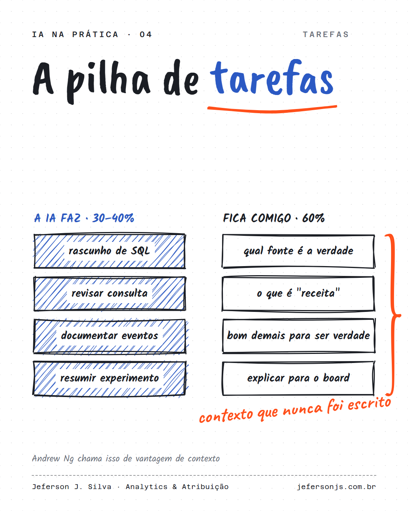

Andrew Ng diz que a IA já faz de 30% a 40% de muitos trabalhos. O raciocínio por trás do número, um trabalho como pilha de tarefas, é mais útil do que o número.

O Andrew Ng, que criou o Google Brain e cofundou a Coursera, disse em entrevista à Marina Mogilko que a IA talvez já consiga fazer de 30% a 40% de muitos trabalhos. A frase assusta, mas o raciocínio por trás dela é mais útil do que o número.
A ideia vem de economistas como o Erik Brynjolfsson, de Stanford: um trabalho não é uma coisa só, é uma pilha de tarefas. A IA é boa em algumas e ruim em outras. As que ela assume ficam baratas. As que sobram, em geral as que dependem de contexto que nunca foi escrito em lugar nenhum, ficam mais escassas e mais valiosas.
O exemplo mais concreto da entrevista vem do próprio time do Ng. A diretora financeira dele criou scripts que abrem os arquivos, conferem se os números são consistentes e avisam a equipe quando algo não bate. Antes, o time passava horas por semana copiando e colando. O trabalho dela não acabou. A parte de copiar acabou, e ficou a parte de decidir o que fazer quando o alerta toca.
Em outro episódio do canal, o Brynjolfsson divide qualquer projeto em três partes: definir a pergunta, executar e avaliar o resultado. Os agentes já dominam a execução. Definir e avaliar continuam humanos, e ele coloca vendas e marketing entre as áreas mais expostas a essa mudança.
Para quem trabalha com dados, a divisão encaixa bem. Escrever a primeira versão de uma consulta, documentar um evento, resumir um teste: execução. Decidir qual fonte é a verdade para cada pergunta, saber que "receita" significa uma coisa para o financeiro e outra para mídia, desconfiar de um parceiro com CPA perfeito demais: definição e avaliação.
O Ng também diz que quem vai perder espaço não é quem trabalha com IA, e sim quem não usa IA para trabalhar. No time dele, todos os profissionais de marketing programam.
Um exercício que cabe em meia hora: liste as tarefas da sua semana e marque cada uma como definir, executar ou avaliar. O que estiver em executar é candidato a automação. O que estiver em avaliar é o que vale treinar.
Na sua função, qual tarefa você colocaria primeiro na coluna de executar?
30 minutos, de graça. Entro nas suas plataformas e mostro os três problemas mais críticos de mensuração.
Quero meu diagnóstico grátis →